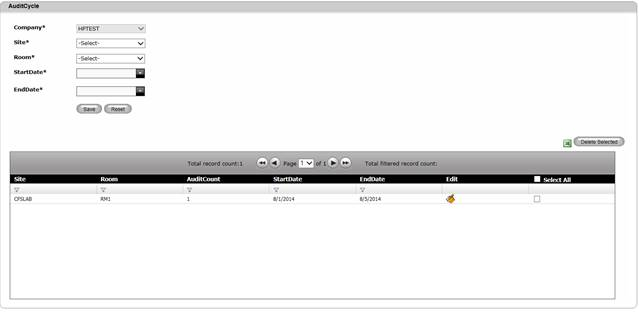
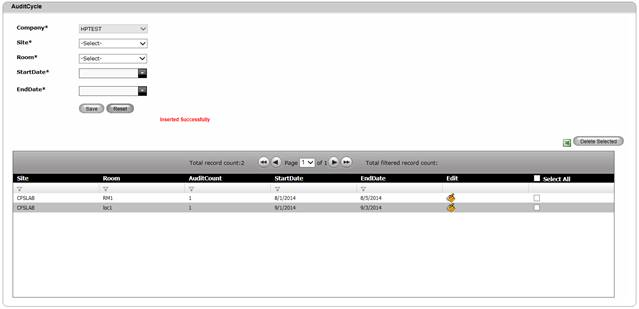

To create an Audit Cycle,
1. Navigate Masters>>Audit Cycle on the DCTrackMobileWeb menu bar.
You will see the Audit Cycle screen.

Figure 82: Audit Cycle screen
2. Enter information on the required fields. Select a Site, Room, Start Date and End Date of the Audit Period. Start Date cannot be any date before the current date.
3. The minimum duration of an audit cycle is a day; i.e. 24-hour period.
4. Click Save button to complete the creation process or else click Reset button to refresh the page fields.
Upon saving, you will see the successful creation message and the created Audit Cycle displayed on the Table View.

Figure 83: Audit Cycle Screen – Successful Creation
|
Copyright © 2019 Hewlett
Packard Enterprise,v5.2.
|